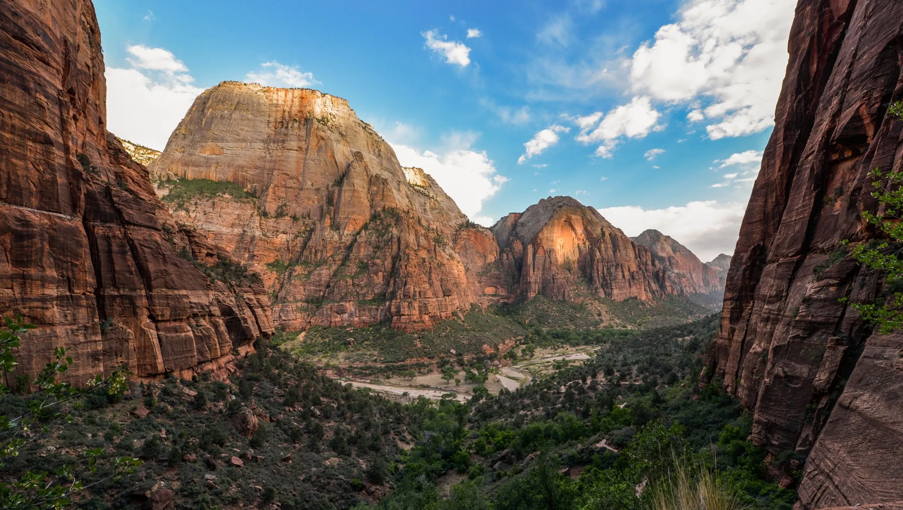
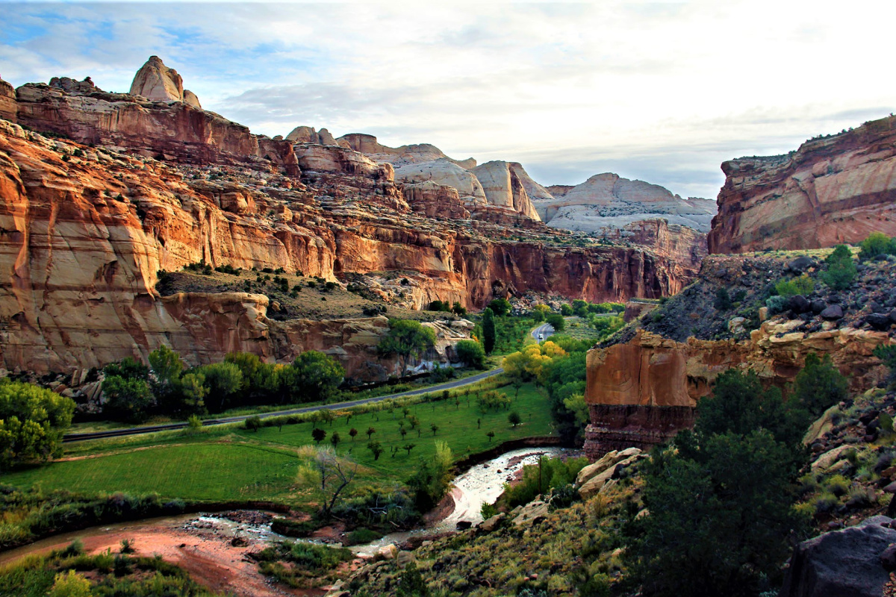
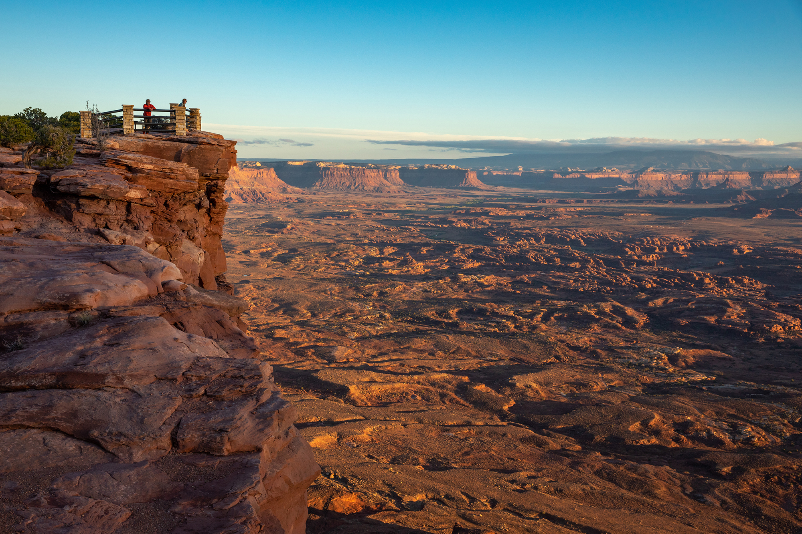
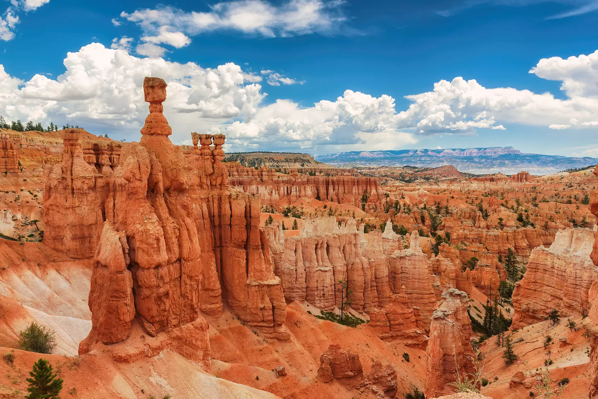

Parks
Zion
At Utah's very first national park, follow the paths where people have walked for thousands of years. Gaze up at massive sandstone cliffs of cream, pink, and red that soar into a brilliant blue sky. Experience wilderness in a narrow slot canyon. Zion’s unique array of plants and animals will enchant you as you absorb the rich history of the past and enjoy the excitement of present-day adventures.
Capitol Reef
Located in south-central Utah in the heart of red rock country, Capitol Reef National Park is a hidden treasure filled with cliffs, canyons, domes, and bridges in the Waterpocket Fold, a geologic monocline (a wrinkle on the earth) extending almost 100 miles.
Arches

Discover a landscape of contrasting colors, land forms, and textures unlike any other. The park has over 2,000 natural stone arches, hundreds of soaring pinnacles, massive rock fins, and giant balanced rocks. This red-rock wonderland will amaze you with its formations, refresh you with its trails, and inspire you with its sunsets.
Canyonlands
Canyonlands invites you to explore a wilderness of countless canyons and fantastically formed buttes carved by the Colorado River and its tributaries. Rivers divide the park into four districts: Island in the Sky, The Needles, The Maze, and the rivers themselves. These areas share a primitive desert atmosphere, but each offers different opportunities for sightseeing and adventure.
Bryce
Hoodoos (irregular columns of rock) exist on every continent, but here is the largest concentration found anywhere on Earth. Situated along a high plateau at the top of the Grand Staircase, the park's high elevations include numerous life communities, fantastic dark skies, and geological wonders that defy description.
YouTube Video
Tableau